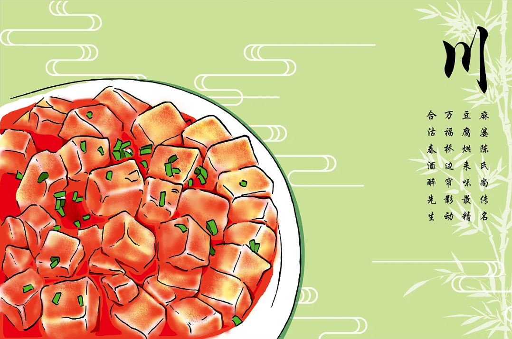
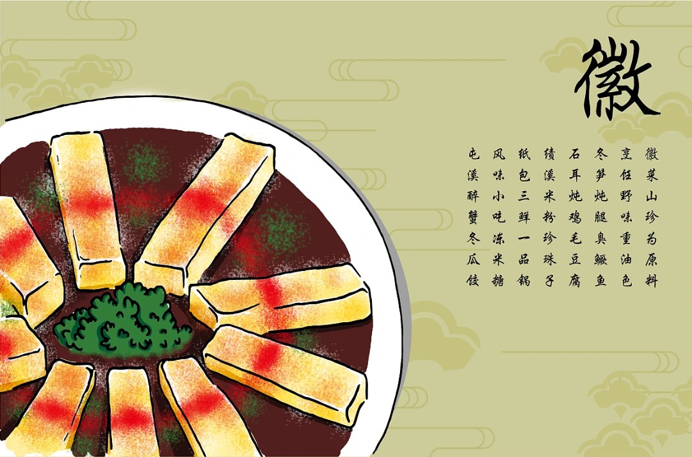
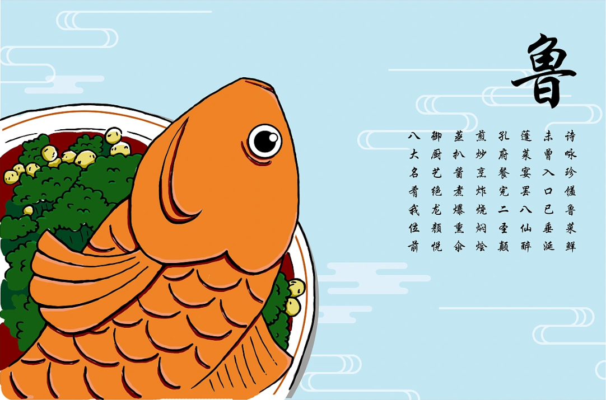
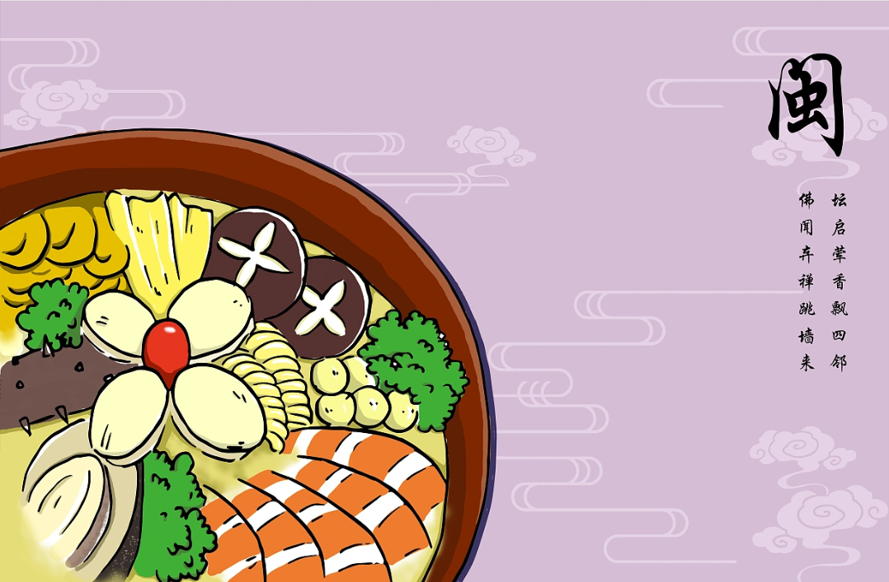
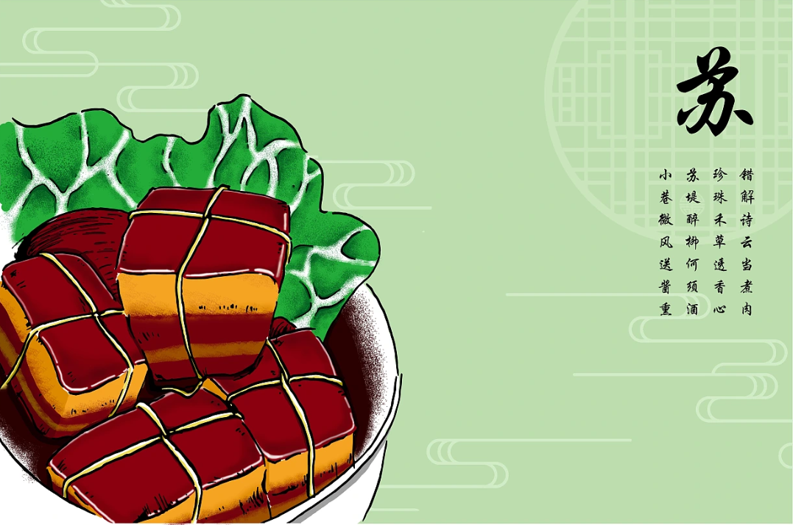
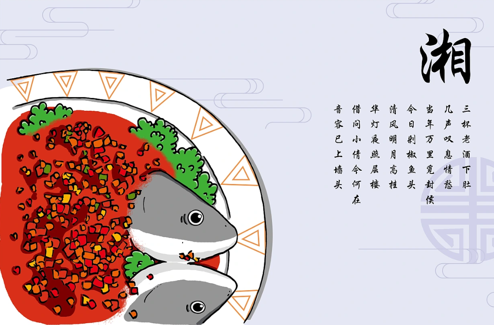
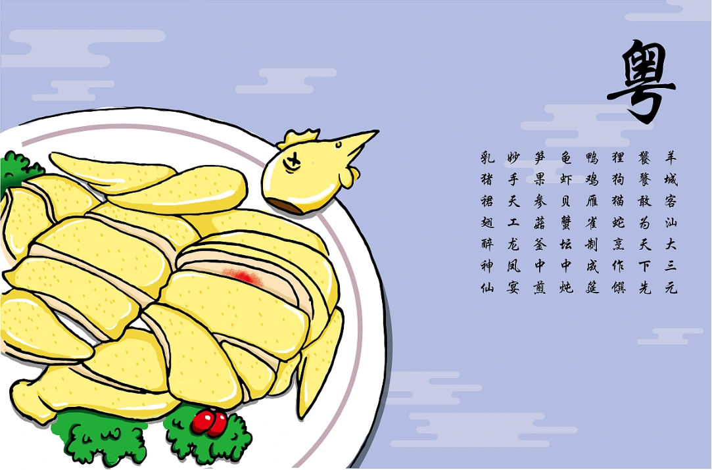
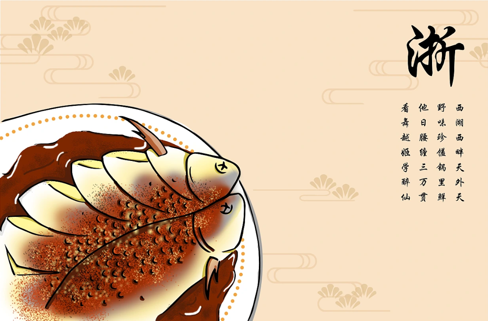

- 
- 
- 
- 
- 
- 
- 
- 
Pay attention to the excellent texture of raw materials, salt to improve freshness, soup to strengthen the freshness, flavouring the pure salty, highlighting the original taste. Salty and fresh is the main fire exquisite, good at making soup, good at cooking seafood. Cuisine is very much about flavouring clear, creamy soups.
Variety of dishes, fresh, mellow and thick flavours, with good use of spicy seasoning, prticularly the pungency and spiciness resulting from liberal use of garlic and chili peppers, as well as the unique flavor of the Sichuan peppercorn. The raw materials are mainly mountain treasures and aquatic products from the territory of Sichuan area.
The ingredients are rigorous, with emphasis on colour matching and modelling, and there are differences between the four seasons. Cooking techniques are known for stewing, braising and simmering; emphasis is placed on adjusting the soup, keeping the original juice, and the flavour is calm. Good use of vegetables.
The selection of ingredients is fine, clear but not bland, tender but not raw, and oily but not greasy. It specialises in small stir-fry, which requires just the right amount of fire and oil temperature. It is also compatible with many western food practices, and pays attention to the momentum and class of the dish.
It is especially good at "aroma" and "flavour", with its fresh, mellow, meaty and unctuous style. It has three characteristics: one is good at seasoning with red dregs, the other is good at making soup, and the third is good at using sugar and vinegar. Fujian is located on the south-east coast, people are good at cooking seafood.
The dishes are small and delicate, clean and handsome, fresh and tender, crisp and soft. The flavour of the northern part is sweet, the western part is spicy and the southeastern part is salty. Zhejiang cuisine is rich in Jiangnan characteristics, has a long history and has a long history.
The colour and lustre of the oil is heavy and thick, and it is affordable; spicy, fragrant, fresh, soft and tender. It attaches importance to the matching of raw materials and mutual penetration of flavours. Hunan cuisine is especially flavoured with spices.
It is good at burning, stewing and steaming, while there are fewer explosive and stir-fry dishes, which are heavy on oil, colour and fire power. Its uniqueness is concentrated in the kung fu dishes which are good at burning, stewing, smoking and steaming.